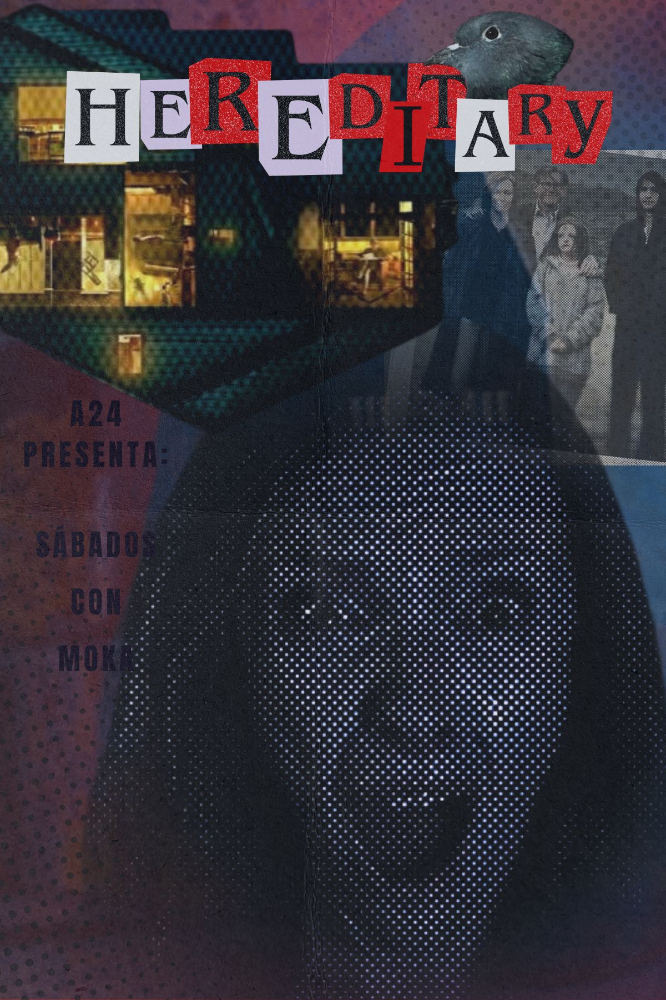

Hereditary
Probablemente una de las películas con mayor suspenso e intriga. Con un aura oscura y ocultista constantemente pero no se deja ver tan fácil, dándonos escalofríos por todo el cuerpo. Ideal para ver una noche de lluvia y frío, dejándonos miedo y suspenso que queda rebotando en nuestras mentes.